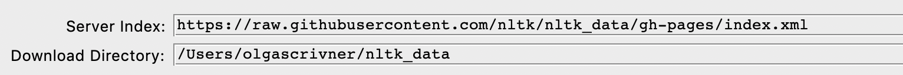
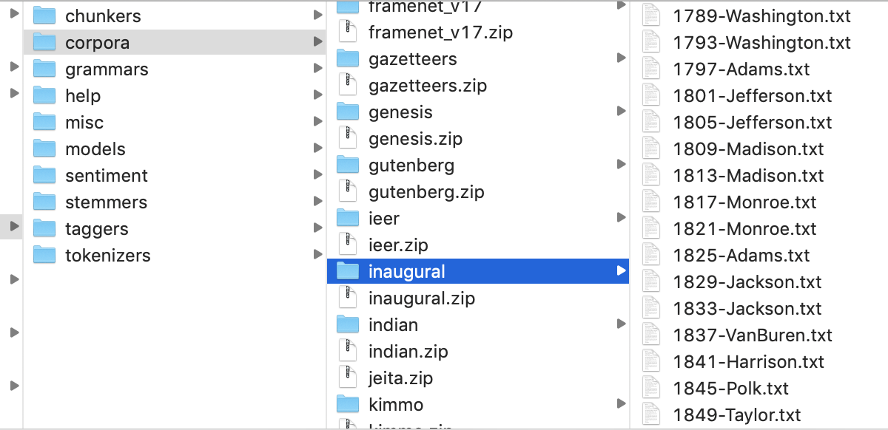

Python for Natural Language¶
NLP and Unstuctured data - Python handles text (unstructured data) using several libraries (NLTK, Gensim, spaCy). We can perform text processing, information retrieval, and text analytics as well as we can apply machine learning algorithms.
Lab Activities¶
Open Jupyter Lab
Create a folder for Lab files
Create a new Python 3 Notebook
Save it as lab1.ipynb
Follow instructions and practice code
Make sure to create section and code blocks (do not write the entirre lab code in one code cell
Click + to addd new cells
Change cells type to Markdown or Code as needed
Submit your work at the end of the class on Moodle
PART 1. Sarkar Book Chapter 2¶
Installing libraries¶
Check your python version:
!python --version # your version should be 3+
Python 3.7.1
pip and conda commands are used to install packages via terminal. In jupyter notebook enviroment you use !pip or !pip3 install __
Check if you have some libraries installed: pandas, numpy, matplotlib, sklearn, scipy, spacy. If not installed, use the following command !pip3 install pandas (and install remaining packages).
!pip3 freeze | grep pandas
pandas==1.3.3
pandas-profiling==3.0.0
String Literals¶
The purpose of a string is to allow any sequence of printable characters and the space to be transmitted. A string is a sequence of ASCII characters, written using C’s notation for strings. Thus, a string is surrounded by double-quote characters and excludes control characters. Backus-Naur Form (BNF) notation
Short strings: enclosed with single quotes (‘) or double quotes (“). For example, ’Hello’ and “Hello”.
Long strings: These strings are usually enclosed with three single (‘’’) or double quotes (“””) around the characters. Some examples are ”””Hello, I’m a long string””” or ‘’’Hello I’m a long string ‘’’. Note the (‘) indicates an escape sequence which we shall talk about soon.
longStr = """
Hello,
I'm a long
string
"""
print(longStr)
Hello,
I'm a long
string
Escape sequences: the rule for escape sequences starts with a backslash (\) followed by any ASCII character. Popular escape sequences include
(\n): a newline character
(\t): a tab
(\s): a space
(\r): carrage return
Raw strings: created specifically for regular expressions. These strings can be created using the r’…’ notation and keep the string in its raw or native form (verbatim). An example is r’Hello’.
r'I\night'
'I\\night'
Unicode: These strings support Unicode characters in text and they are usually non-ASCII character sequences. These strings are denoted with the u’…’ notation and represent non-ASCII characters. Other examples include hex-digits: ‘H\xe8llo’ and ‘H\u00e8llo’
'H\u00e8llo'
'Hèllo'
Exercice 1.¶
How do you fix the following strings? If you run them, there will be an error (see below) because quotes and backslash are used for escape characters:
txt1 = "We are the so-called "Vikings" from the north." # invalid syntax
text2 = 'Hello, I'm a string' # invalid syntax
text3 = "day\night" # this will print day new line ight (see below)
text3 = "day\night"
print(text3)
day
ight
#Your solution
String Methods¶
Python Documentation - https://docs.python.org/3/library/stdtypes.html#string-methods
Follow Along Sarkar Section Methods p. 98-100
# Continue Follow Along here.
# Add more cells for each code concept presented in the boook
Exercice 2.¶
Remove period, convert to lower cases and split by space. Your output should look like: [‘i’, ‘went’, ‘to’, ‘the’, ‘store’]
sentence = "I went to the store."
# Your solution
PART 2. NLTK Book¶
Follow Along Chapter 1 - https://www.nltk.org/book/ch01.html
Complete Sections 1,2. If time allows 4 and 3 during the class
Work on the remaining sections at home
NLTK Missing Books Issues¶
If you are getting errors on missing a corpus (e.g. inaugural). Please download it manually as zip file and place in the NLTK directory.
STEP 1. Check your NLTK data directory¶
NLTK directory: run nltk.download() and it will bring a NLTK downloader. Check where the NLTK directory is

STEP 2. Download Inaugural zip¶
Link: https://github.com/nltk/nltk_data/tree/gh-pages/packages
Go to Corpora and find inaugural.zip
Download zip, unzip it inside your directory: nltk_data/corpora/ 
STEP 3. Rerun your notebook code¶
Credits: Jeremiah